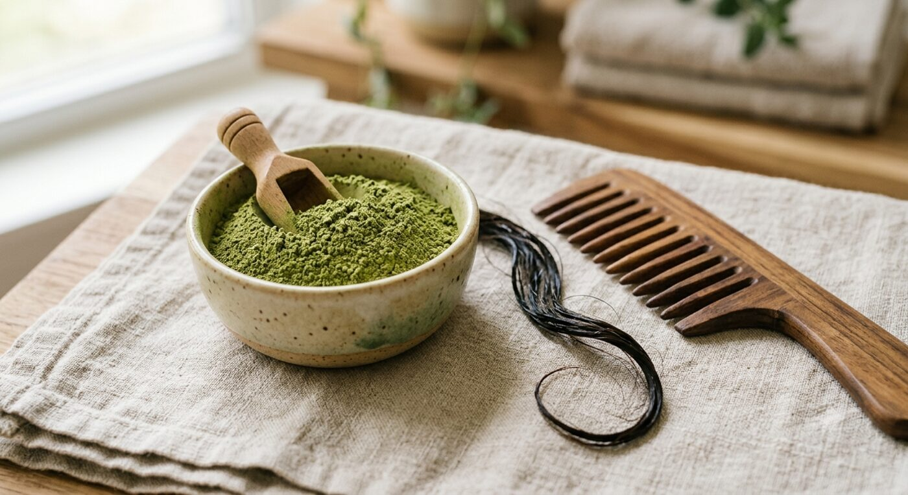

Une pharmacopée cutanée ancienne
Les feuilles, fruits et graines du sidr sont mentionnés dans plusieurs pharmacopées traditionnelles pour la prise en charge de troubles cutanés, aux côtés d'usages contre le diabète, le paludisme, les troubles digestifs ou les infections urinaires (ResearchGate, phytochimie et pharmacologie de Z. spina-christi). Historiquement, la médecine égyptienne antique employait déjà des préparations à base de sidr contre les gonflements et les douleurs inflammatoires (Kadioglu et al., Phytomedicine, 2016).
Des propriétés antibactériennes mesurées en laboratoire
Plusieurs études récentes confirment un potentiel antibactérien pour les extraits de feuilles de Ziziphus spina-christi. Une étude publiée dans les actes de l'AIP Conference Proceedings a spécifiquement testé l'activité antibactérienne d'un extrait de feuilles contre Propionibacterium acnes, la bactérie impliquée dans l'acné (AIP Conference Proceedings, activité antibactérienne contre P. acnes). Une autre étude s'est intéressée à une crème vaginale à base d'extrait hydro-alcoolique de feuilles de sidr contre Candida albicans chez le rat, avec des résultats encourageants comparés au traitement de référence (PMC, extrait de Ziziphus spina contre Candida albicans).
Une activité anti-inflammatoire documentée
L'étude de Kadioglu et ses collègues (2016) a également montré que l'extrait de Ziziphus spina-christi inhibait fortement les enzymes COX-1 et COX-2, impliquées dans la production de prostaglandines pro-inflammatoires, avec un taux d'inhibition supérieur à 85 % en laboratoire (Kadioglu et al., Phytomedicine, 2016). Un cas clinique publié dans PMC a même rapporté l'usage d'un extrait de Ziziphus spina-christi pour traiter une éruption cutanée liée à un traitement anticancéreux (erlotinib), avec une amélioration notable — un cas isolé qui ne remplace pas un essai clinique à grande échelle, mais qui illustre l'intérêt de la recherche actuelle (PMC, cas clinique — éruption liée à l'erlotinib).
Usages traditionnels : eczéma, psoriasis, furoncles, acné
Dans la tradition, les feuilles de sidr sont utilisées en application locale pour apaiser les démangeaisons, les furoncles, l'eczéma, le psoriasis ou l'acné (EssentielleSunna, les feuilles de sidr). Leurs vertus nettoyantes et astringentes contribueraient à resserrer les tissus cutanés et à favoriser la cicatrisation (Nilabeautys, feuille de jujubier). Il est important de noter que ces usages précis (contre l'eczéma ou le psoriasis en particulier) reposent essentiellement sur la tradition et des études précliniques ciblées, et non sur des essais cliniques dermatologiques randomisés à grande échelle chez l'humain.
Le fruit du sidr aussi utilisé en cosmétique
Au-delà des feuilles, les fruits de Ziziphus spina-christi font l'objet de recherches pour des formulations de lotions bio, en raison de leurs propriétés antioxydantes et antibactériennes (ScienceDirect, extraits de fruits de Ziziphus spina-christi en formulation cosmétique). Notre magazine se concentre volontairement sur les feuilles, mais il est utile de savoir que le sidr est une plante aux usages multiples (voir notre article sur les différentes espèces Ziziphus).
Précautions d'usage
Comme pour toute poudre végétale appliquée sur la peau, un test préalable dans le pli du coude est recommandé avant la première utilisation, en particulier pour les peaux sensibles, réactives ou sujettes aux allergies. En cas de plaie ouverte, d'infection cutanée active ou de pathologie dermatologique diagnostiquée (eczéma sévère, psoriasis étendu), l'avis d'un dermatologue reste indispensable avant tout usage régulier du sidr en complément — ou en remplacement — d'un traitement prescrit.

Le sidr affiche un profil intéressant en laboratoire (antibactérien, anti-inflammatoire), mais son usage contre des pathologies cutanées précises relève encore, pour l'essentiel, de la tradition plutôt que de la médecine fondée sur des preuves cliniques à grande échelle.
Sources
- ResearchGate — Phytochemistry and pharmacologic properties of Ziziphus spina-christi
- Kadioglu et al. — Phytomedicine, 2016
- AIP Conference Proceedings — Antibacterial activity against P. acnes
- PMC — Ziziphus spina extract vs Candida albicans
- PMC — Cas clinique, éruption liée à l'erlotinib
- EssentielleSunna — Les feuilles de sidr : bienfaits et utilisations
- ScienceDirect — Ziziphus spina-christi fruit extracts in skincare lotion